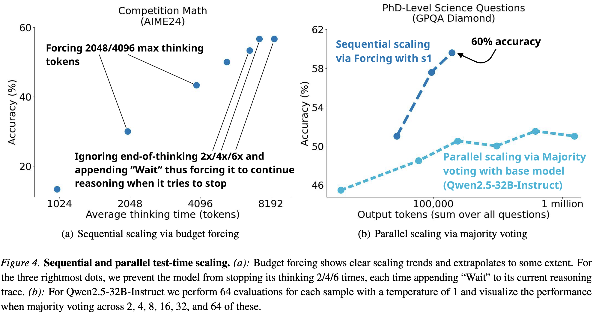

We introduce s1: a minimal recipe for test-time scaling and strong reasoning performance matching o1-preview with just 1,000 examples & budget forcing

Test-time scaling is a promising new approach to language modeling that uses extra test-time compute to improve performance. Recently, OpenAI's o1 model showed this capability but did not publicly share its methodology, leading to many replication efforts. We seek the simplest approach to achieve test-time scaling and strong reasoning performance. First, we curate a small dataset s1K of 1,000 questions paired with reasoning traces relying on three criteria we validate through ablations: difficulty, diversity, and quality. Second, we develop budget forcing to control test-time compute by forcefully terminating the model's thinking process or lengthening it by appending "Wait" multiple times to the model's generation when it tries to end. This can lead the model to double-check its answer, often fixing incorrect reasoning steps. After supervised finetuning the Qwen2.5-32B-Instruct language model on s1K and equipping it with budget forcing, our model s1-32B exceeds o1-preview on competition math questions by up to 27% (MATH and AIME24). Further, scaling s1-32B with budget forcing allows extrapolating beyond its performance without test-time intervention: from 50% to 57% on AIME24. Our model, data, and code are open-source.
We build a diverse, difficult & high-quality dataset of 1000 questions - "s1K" (left). Traing on s1K yields s1 (right) - the most sample-efficient reasoning model on three commonly used tasks:
We introduce "Budget Forcing" - a simple technique to forcefully control the model's thinking time.
Budget forcing allows controlling test-time compute (left) and scales better than majority voting (right).
Letting the model think for longer sequentially eventually becomes too long and the model runs out of context. To circumvent this, we can combine Budget Forcing with parallel scaling techniques to scale further.
@misc{muennighoff2025s1simpletesttimescaling,
title={s1: Simple test-time scaling},
author={Niklas Muennighoff and Zitong Yang and Weijia Shi and Xiang Lisa Li and Li Fei-Fei and Hannaneh Hajishirzi and Luke Zettlemoyer and Percy Liang and Emmanuel Candès and Tatsunori Hashimoto},
year={2025},
eprint={2501.19393},
archivePrefix={arXiv},
primaryClass={cs.CL},
url={https://arxiv.org/abs/2501.19393},
}